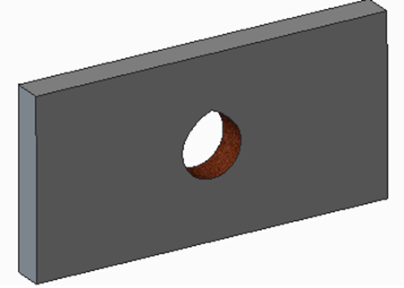
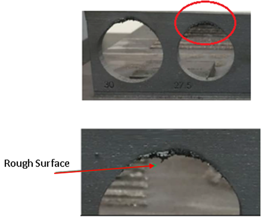
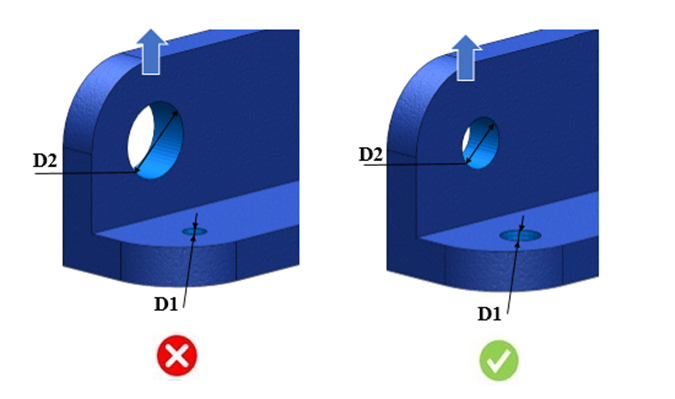

積層造形において良好な品質を確保し、外観上の問題を回避するために、適切な穴径を維持する必要があります。
造形方向に基づき、垂直面上に穴が存在する場合、その穴径は 10 mm を超えないことが推奨されます。穴径が 10 mm を超える場合、通常は追加のサポートが必要になります。
可能な限り、垂直面上に最大径の穴を設けることは避けてください（以下の画像を参照）。ただし、やむを得ない場合には、円形断面の形状を洋梨形状または円錐形状に変更することを推奨します。

穴軸は造形方向に対して垂直です。
Z = 造形方向
DFMPro はパーツ内に存在する穴を識別し、最大穴径および最小穴径の条件について検証を行います。
ルール UI では、材料の一覧が 材料マッピング から自動的に読み込まれ、ユーザーは材料およびその値を設定できます。
材料とその値を設定した後、ユーザーは Ctrl+M コマンドを使用して、ルール UI 上で材料グループおよびグレードとともに、設定済み材料の一覧をフィルタ表示できます。同じキー（Ctrl+M）を使用してフィルタを解除できます。

注記:
造形プロセスが円形断面の上部に近づくにつれて、溶融が発生する上面の面積が減少し、その結果、熱伝達率が低下します。
このため、この領域では焼けが発生します。焼けた部分は円形断面の上部に位置するため、表面が粗くなり、追加の仕上げ工程が必要になります。


注記:
D1 は造形方向とは関連付けられていません。
D2 は造形方向と関連付けられています。
テーパ穴またはドラフト穴の場合で、指定されたテーパ穴の軸が造形方向に対して垂直である場合。
ホールチェーン：各穴の直径に基づいて、個別の違反インスタンスが作成されます。